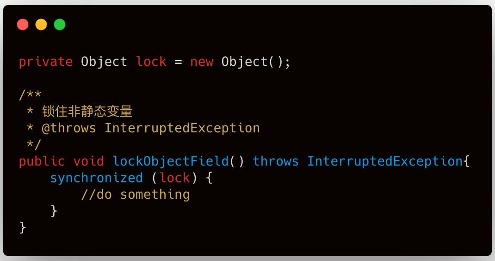
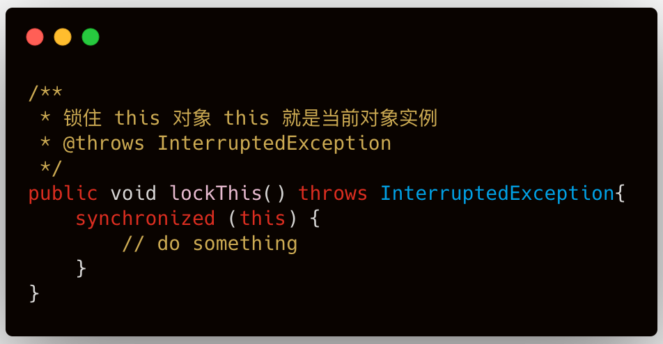
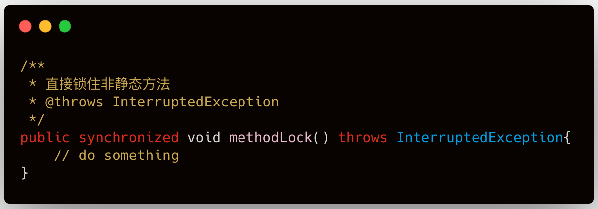
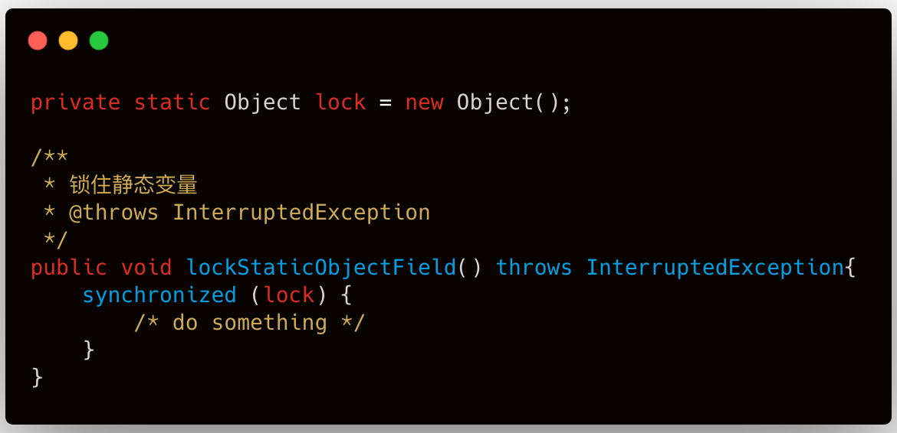
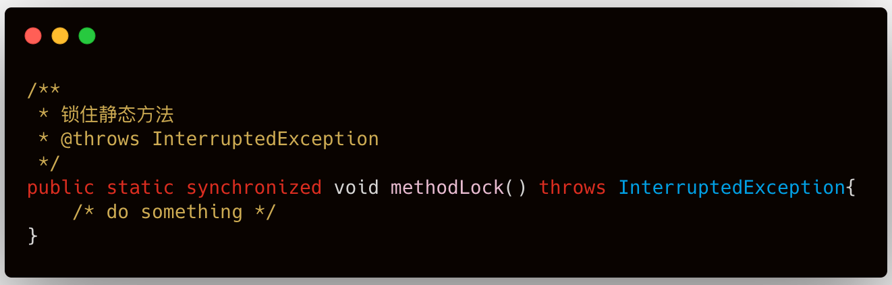
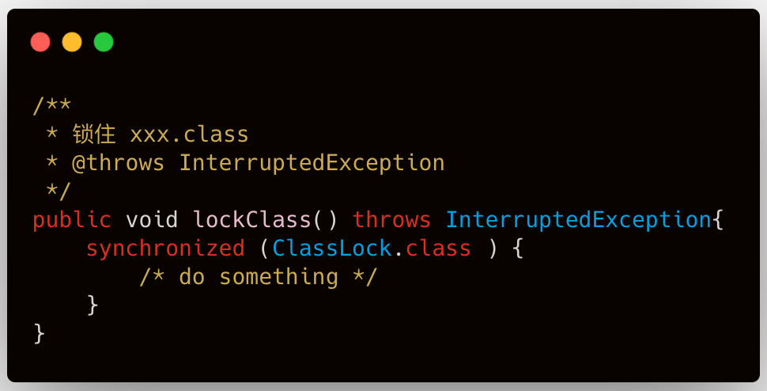

生活中不存在绝对的自由，绝对的自由通常对应的无序和混沌，只有在道德、法律、伦理的约束下的相对自由，才能使人感受到自由。
而在多线程编程中，锁是至关重要的，锁就是道德，就是法律约束，没有锁的多线程环境将会是混乱的，所有线程都在争夺资源，最后的结果就是导致系统崩溃，而有了锁之后，多线程环境才能稳定高效的工作。
synchronized 是我们所说的重量级锁，所说的重量级是相对于那些自旋锁(AQS)而言的，比如可重入锁ReentrantLock。很多人谈 synchronized 色变，说它性能差、太重，貌似言之凿凿。放在多年前确实如此，但是 Java 1.7、1.8 已经对 synchronized 做了很大优化，其性能和那些轻量级锁几乎没有差距。
所以，我们再程序中其实可以放心的使用它，即使没有用过，也肯定在一些源码里见过，比如 Netty 中就有很多地方用到了它。
下面开始进入今天的主题，类锁和实例锁。看名字就已经很明显了，类锁就是所在类上的锁，实例就是锁在类实例上的锁。
类声明后，我们可以 new 出来很多的实例对象。这时候，每个实例在 JVM 中都有自己的引用地址和堆内存空间，这时候，我们就认为这些实例都是独立的个体，很显然，在实例上加的锁和其他的实例就没有关系，互不影响了。
通常我们使用实例锁的方式有下面三种：
1、 锁住实体里的非静态变量
非静态变量是实例自身变量，不会与其他实例共享，所以锁住实体内声明的非静态变量可以实现对象锁。锁住同一个变量的方法块共享同一把锁。

2、锁住 this 对象
this 指的是当前对象实例本身，所以，所有使用 synchronized(this)方式的方法都共享同一把锁。

3、直接锁非静态方法
最简单、最直观的一种方式，直接加在方法返回类型前。

使用对象锁的情况，只有使用同一实例的线程才会受锁的影响，多个实例调用同一方法也不会受影响。
下面来做个测试，开启 5 个线程，每个线程都 new 一个新的实例来分别调用上面三种方式的方法，方法完成的动作就是输出线程名称，然后休眠 10 秒钟。
public class ObjectLock {
private Object lock = new Object();
/**
* 锁住非静态变量
* @throws InterruptedException
*/
public void lockObjectField() throws InterruptedException{
synchronized (lock){
System.out.println(Thread.currentThread().getName());
Thread.sleep(10*1000);
}
}
/**
* 锁住 this 对象 this 就是当前对象实例
* @throws InterruptedException
*/
public void lockThis() throws InterruptedException{
synchronized (this){
System.out.println(Thread.currentThread().getName());
Thread.sleep(10*1000);
}
}
/**
* 直接锁住非静态方法
* @throws InterruptedException
*/
public synchronized void methodLock() throws InterruptedException{
System.out.println(Thread.currentThread().getName());
Thread.sleep(10*1000);
}
public static void main(String[] args){
for (int i = 0; i < 5; i++) {
Thread worker = new Thread(new ObjectLockWorker());
worker.setName("kite-" + i);
worker.start();
}
}
public static class ObjectLockWorker implements Runnable{
@Override
public void run() {
try {
ObjectLock objectLock = new ObjectLock();
// 方式 1
objectLock.lockObjectField();
// 方式 2
//objectLock.lockThis();
// 方式 3
//objectLock.methodLock();
} catch (Exception e) {
e.printStackTrace();
}
}
}
}我们预测的结果就是每个线程都会立刻输出线程名称，然后各自休眠 10 秒。
分别调用方式1、2、3，效果都是一样的，我们看到输出结果和我们预测的是一样的，5 个线程都立即输出线程名，然后等待 10 秒，整个程序退出。
类锁是加载类上的，而类信息是存在 JVM 方法区的，并且整个 JVM 只有一份，方法区又是所有线程共享的，所以类锁是所有线程共享的。
使用类锁的方式有如下方式：
1、锁住类中的静态变量
因为静态变量和类信息一样也是存在方法区的并且整个 JVM 只有一份，所以加在静态变量上可以达到类锁的目的。

2、直接在静态方法上加 synchronized
因为静态方法同样也是存在方法区的并且整个 JVM 只有一份，所以加在静态方法上可以达到类锁的目的。

3、锁住 xxx.class
对当前类的 .class 属性加锁，可以实现类锁。

类锁是所有线程共享的锁，所以同一时刻，只能有一个线程使用加了锁的方法或方法体，不管是不是同一个实例。
下面同样来做个测试，开启 5 个线程，除了调用静态方法的方式，其他两种方式中每个线程都 new 一个新的实例来分别调用，方法内完成的动作就是输出线程名称，然后休眠 10 秒钟。
public class ClassLock {
private static Object lock = new Object();
/**
* 锁住静态变量
* @throws InterruptedException
*/
public void lockStaticObjectField() throws InterruptedException{
synchronized (lock){
System.out.println(Thread.currentThread().getName());
Thread.sleep(10*1000);
}
}
/**
* 锁住静态方法
* @throws InterruptedException
*/
public static synchronized void methodLock() throws InterruptedException{
System.out.println(Thread.currentThread().getName());
Thread.sleep(10*1000);
}
/**
* 锁住 xxx.class
* @throws InterruptedException
*/
public void lockClass() throws InterruptedException{
synchronized (ClassLock.class){
System.out.println(Thread.currentThread().getName());
Thread.sleep(10*1000);
}
}
public static void main(String[] args){
for (int i = 0; i < 5; i++) {
Thread worker = new Thread(new ClassLockWorker());
worker.setName("kite-" + i);
worker.start();
}
}
public static class ClassLockWorker implements Runnable{
@Override
public void run() {
try {
ClassLock classLock = new ClassLock();
// 方式 1
classLock.lockStaticObjectField();
// 方式 2
//ClassLock.methodLock();
// 方式 3
//classLock.lockClass();
} catch (Exception e) {
e.printStackTrace();
}
}
}
}我们预测的结果就是刚开始只有1个线程抢到锁，然后输出线程名，之后等待 10 秒中，之后是下一个抢到锁的线程，输出线程名，然后等待 10 秒。直到最后一个抢到锁的线程，整个过程历时大约 50 秒。
分别调用方式1、2、3，观察执行结果，和我们预测的是一致的。
怎么样，面试再考你对象锁和类锁的时候，是不是能从容一点儿了呢。看到这里的同学请注意了，点个「推荐」再走，没有看到这里的同学就不用注意了（这不废话吗）
你还可以读：